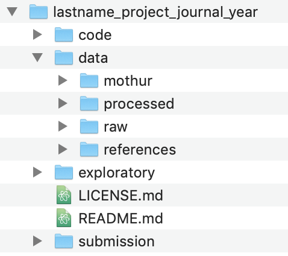

Project organization
I love starting new projects. Everything feels so simple and obvious. Weeks, months, and years after staring things have gotten complicated, confusing, and tedious. We’re ready for it to be done already. With each project, I tell myself, this is going to be different! Well dear reader, today is that day. We are going to start a new project with the goal of answering a question that is important to those of us interested in analyzing microbial communities: To what degree do inter- and intra-genomic variation limit the interpretation of amplicon sequence variants (ASVs)? Along the way we’ll learn different elements of what it takes to make an analysis reproducible and how to use a variety of tools that will help out. We’ll get started in this session with using the command line to set up our project directory. Even if you don’t find the problem we are studying interesting, you will hopefully find the approach generalizable to a variety of problems that do interest you.
The problem
Within the field of microbial ecology we regularly sequence a portion of the 16S rRNA gene. Over the past ~30 years we have used this approach to characterize the biodiversity in and between communities. Traditionally, researchers would compare the sequences for this gene to a database to determine the relatives of our sequences. When we cluster sequences together based on who they are similar to in a database, I call that phylotyping. Because our databases are pretty inadequate considering the diversity of bacteria, about 20 years ago researchers started clustering these sequences into bins based on their similarity to each other rather than their similarity to something in a database. We generally do this based on a distance threshold of 3% or similarity level of 97%. People like to think that this relates to some definition of species for bacteria, but that is a stretch. Instead, we generally call these bins operational taxonomic units or OTUs. In recent years people have started to more seriously question why we need to use a 3% distance. Why not use a smaller distance? Why not define a bin where we require sequences to be identical to each other or perhaps only one or two nucleotides different from each other. These have been called a variety of things including oligotypes, amplicon sequence variants (ASVs), and exact sequence variants (ESVs). Because these bins, in practice, allow for some difference between sequences, I’m going to run with calling them ASVs. The logic behind ASVs is that by looking at a more fine scale, we would more accurately represent the genome level diversity of the community than we could by using phylotypes or OTUs. Of course phylotypes and ASVs are all OTUs with a different definition.
In some regards, the idea behind ASVs is not novel. Sue Huse laid the ground work for this idea with her single-linkage preclustering (SLP) methodology and Murat Eren took it the next step to develop methods for oligotyping. The mothur software package, which my research group develops has generated the data for ASVs as part of its workflow since February 2010 when we first included the pre.cluster function as an alternative to SLP. Those that push for ASVs have gone so far as to say that “ASVs should replace OTUs as the standard unit of marker-gene analysis and reporting”. I’m not sure that I agree with that claim for a number of reasons, which I’ve mostly laid out in a preprint review. There are other reasons that I have concerns about ASVs, but there is one question that I’d like to take on in the next episodes of Code Club.
One of the somewhat unspoken challenges of using 16S rRNA genes is that many bacterial genomes have more than one copy. Some have 1, some have 21. This variation complicates efforts to quantify the number of bacteria in a community. For ASVs, there is another potential problem. These different copies are not identical. This is something that has also been discussed by Noah Fierer and his group here and here. In my review, I stated:
As an example of intragenomic variation, E. coli ATCC 70096 has 7 copies of the 16S rRNA gene and 6 of these are different from each other in the full length version of the gene. Fortunately, within the V4 region the 7 copies are identical. Alternatively, Staphylococcus aureus ATCC BAA-1718 and Staphylococcus epidermidis ATCC 12228 both have 5 copies of the 16S rRNA gene. Considering the V4 region of these species, 4 of the 5 copies in each genome are identical between the two species. The remaining S. aureus copy is 1 nt different from the other S. aureus copies; however the remaining S. epidermidis copy is 1.7 and 2.0% different from the other S. epidermidis and S. aureus copies. The less restrictive threshold would lump the two species together; however, the more restrictive threshold suggested by Edgar would generate 3 OTUs. None of these reflect the biology he claims and the method would split sequences from the same strain into different OTUs.
These examples naturally have a biased representation: they were strains found in the HMP mock community. As far as I am aware, there has not been a systematic analysis of the impacts of intra- and inter-genomic variation between 16S rRNA gene operons from the perspective of ASVs. A 2013 study from Dong-Lei Sun and colleagues came close to answering my questions, but the work was done 7 years ago and there are now more data available (N=15,829 genomes) than they had access to (N=2,013 genomes). Regardless, I think this is an interesting question that serves as a motivation to learn tools designed to foster better reproducible analyses.
To answer this and related questions we will leverage the tremendous rrnDB database developed by my colleague, Tom Schmidt, and his lab who are also at the University of Michigan (we share lab space). This database provides searchable and downloadable versions, which include the sequences for each 16S rRNA gene in a genome and taxonomic information about the genome. Among the 15,829 genomes represented, there are data for 15,486 bacterial genomes representing 4,568 species and 343 archaeal genomes representing 261 species. The database has been updated every Fall since 2014. Of course, these data do not tell us about the variation for bacteria, but if the results of analyzing known biodiversity are problematic, then it would also be troubling for the as yet unknown biodiversity.
Organization
A lot of my thinking on project organization is adapted from a Commentary published by William Stafford Noble in PLOS Computational Biology. As he states in the Commentary:
Someone unfamiliar with your project should be able to look at your computer files and understand in detail what you did and why. This “someone” could be any of a variety of people: someone who read your published article and wants to try to reproduce your work, a collaborator who wants to understand the details of your experiments, a future student working in your lab who wants to extend your work after you have moved on to a new job, your research advisor, who may be interested in understanding your work or who may be evaluating your research skills. Most commonly, however, that “someone” is you.
Quick. Go look at the current project you are working on. Where are the files? What kind of organization do you have? Noble’s Commentary is based on his experience working on computational biology projects. I’m going to share my organization based on my experience working on bioinformatics projects related to studying microbial communities. With time and experience, you’ll likely develop a structure that works well for the types of projects you work on. Here are a few general principles to keep in mind:
- Different types of things should stay separate (e.g. code and data)
- Everything should be contained within one directory
- All code should assume that it is run from the root of that directory (i.e. project home or project root)
- Raw data should stay raw and separate from other data
- Directories and filenames will be in lower case with no spaces using snake_case. I violate this rule for naming the project root.
My basic project structure looks like this:

As we go through the project, we’ll add files and directories to better serve our analysis, but this is the basic structure we’ll use. The code and data directories should be clear what they’ll contain. The exploratory directory will contain any notes that I make about the progress of my analysis - this will be like my notebook. The submission directory will
Command line interface
You can hopefully generate a directory that looks like this using the graphical interface on your computer (i.e. Finder in Mac OS X and Windows Explorer in Windows). But don’t! Because many of our future steps will use the command line, we need to get more comfortable working there. For today’s episode of Code Club, we’re going to learn some tools for working with directories and files from the command line. Before we get going, it will be best to work from within a unix-type shell. If you are using a Mac then you can find the Terminal app already installed in /Applications/Utilities. If you are using a computer that runs Windows, you need to go ahead and install git for windows, which includes Git BASH you should install the Ubuntu Linux BASH shell for Windows 10 (if you don’t have Windows 10, you probably should). This will appear as the Ubuntu program in your Windows Start menu. When I talk about using the command line interface, I am referring to Terminal and the Linux BASH shell.
Your computer is like a tree
When you start up your command line interface you will generally be plopped into your home directory. You’ll find something that looks like this awaiting you…
pschloss@rideau ~ $
The $ is the prompt where you will enter the commands that I share with you below.
Open your Finder/Windows Explorer window and navigate to your home directory. Here you’ll see a number of different directories. In mine, I see directories including Applications, Desktop, Documents, Downloads and others. These are the directories within our home directory. We can move to these directories using the cd command (short for change directory). Go ahead and try this
cd Documents
This will move you to your Documents directory. There are two ways to remind yourself where you are. First you can use ls to list the contents of the directory you are in
ls
This should generate a list that looks like the visual output you see in your Finder/Windows Explorer for that directory. Another approach is to use pwd to see your working directory
pwd
On my computer this outputs /Users/pschloss/Documents, which tells me that I am in my Documents directory. As you move around your directories, it helps to think of your computer as a tree. The root of the tree or the computer is the / directory. This is literally called the “root”. I can look at the output of pwd and see that within the root directory there is a directory called Users and in that directory there is a directory called pschloss and in that one called Documents. You can use ls to see what is in any directory, even if you aren’t located in the directory. From Documents, notice what happens when you run this
ls /Users/pschloss/Desktop
The output should look like what you see on your Desktop.
Making directories
I want to put our project directory within our Documents directory. To make directories we can use mkdir. The basic template that I use to name a project directory is LastName_ProjectBlurb_Journal_Year. The idea is that I can sort projects by the lead researcher’s “last name” to find the project for anyone in my lab. The “project blurb” is a one or two word description of the project (e.g. rrnAnalysis). The “journal” is where we think we’ll submit the manuscript (yes, it is aspirational to think that we’re going to publish every project!1). Finally, the year is the current year, until the project is published and then we use the publication year. I could see an argument for putting the year first so that we could sort projects chronologically. I’ll name my project “Schloss_rrnAnalysis_XXXX_2020” (I’m not sure if or where I’d submit this, maybe mSphere?). To create this directory, I’ll do the following
mkdir Schloss_rrnAnalysis_XXXX_2020
If you look in your Documents directory using Finder/Windows Explorer, you should see the new directory. Now we want to move into our new directory.
cd Schloss_rrnAnalysis_XXXX_2020
This will be empty, which we can check by using ls.
ls
Next, I want to create the directories that I have outlined in the screen shot I put above. I can create directories individually like we did above, or I can create multiple directories at once. For example
mkdir code exploratory submission data
Use ls to confirm that those directories have been created
ls
Making files
Similar to how we can make directories from the command line interface, we can also create files from the command line. To create an empty file, we can use touch and name the file(s) that we want to create
touch README.md LICENSE.md
Again we can use ls to list the contents of the directory. We can also use the -F flag with ls to help distinguish between directories and files.
ls -F
You’ll notice that your directory names have a trailing / character where as your files do not.
Paths
As I mentioned above, pwd gives us our current location or “working directory”. This output is known as our “path”. Specifically, the output from pwd is the “absolute path” since it traces the path all the way back to the root of my computer at /. For our project, everything we do will be done relative to the project root using “relative paths”. For example, if we want a raw data file, we would look in data/raw/ rather than /Users/pschloss/Documents/Schloss_rrnAnalysis_XXXX_2020/data/raw. Aside relative paths being shorter, they are more “portable” and lend themselves to greater reproducibility. This is because if you give me your project directory, it will work on my computer even if I put it on my Desktop or some other directory. Relative paths are your friend. We want to run everything from our project root because if you change directories in the middle of an analysis and the analysis hits a bug and needs to be restarted, it may not be clear from the code which directory you need to be in to restart the analysis. To demonstrate this a bit more clearly, we need to generate our data directories. The path to my relative path to my raw directory from my project root is data/raw/
mkdir data/mothur/ data/processed data/references/ data/raw/
If we are working from our project root, we can denote this with ./. Note the added . before the /, which distinguishes it from the root of the computer. Finally, we can see the contents of our project directory using the -R flag
ls -R
You could combine that with the -F flag that we saw earlier
ls -RF
The output from ls -F shows you the relative path to every directory and file, relative to the project root.
Caveat emptor: deleting things
If we added a directory that we don’t really want, we could always remove the file or directory using rm or rmdir, respectively. To remove the LICENSE.md file we could do
rm LICENSE.md
Alternatively, if we want to remove the data/raw directory, we coudl do
rmdir data/raw/
After running these commands, go back and recreate the deleted file and directory. Remember that with “great power comes great responsibility”. Many people have accidentally deleted their projects using these commands. Once something is deleted, it is gone - it does not go to the Trash. Be careful. In the next episode we’ll talk about adding version control to our project and how we can use it to maintain a historical documentation of everything we’ve done. One benefit of version control is that it can serve as a back up of your work.
It may not feel like it, but we’ve done a lot today. We’ve introduced the project we will be working on, described the differences between absolute and relative paths, and learned how to create directories and files (mkdir, touch), move between directories (cd), list the contents of directories (ls), and how to delete things (rm, rmdir).
Exercises
1. Quit your command line interface by typing exit at the prompt. Restart the command line interface and navigate to your project root.
2. Put a file called README.md into every subdirectory of the project. Use ls to confirm that every directory now has a README.md file. Do not use cd!
3. Thinking ahead, what questions might you want to answer with the data from the rrnDB?
-
It’s good to be aspirational. Where would we be without goals? As this series develops and if it turns into a paper, I would be very happy to be generous in providing co-authorship to anyone that contributes code or ideas. Stay tuned for ways to make your contributions! ↩